Hamarikyu Garden
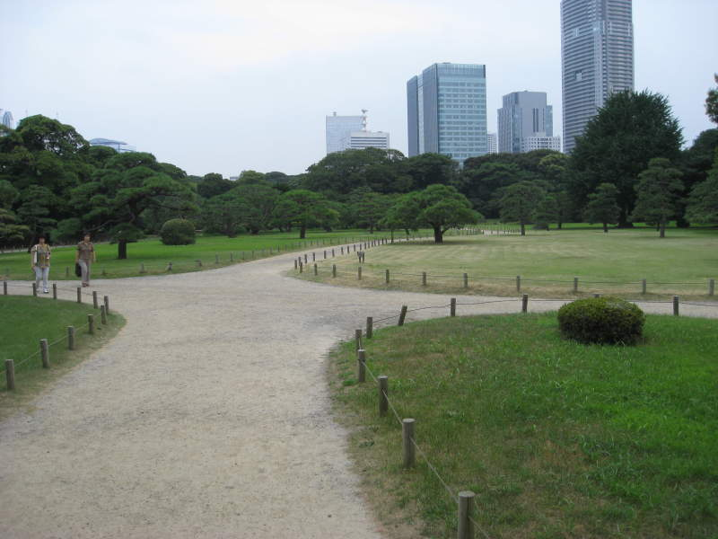
My
quest to find a stunning Japanese garden brought me to Hamarikyu
Garden. Actually, I mostly ended up here because I was trying to
get to the Tsukiji fish market, which is on the opposite side of the
river. Nevertheless, I saw a garden and went for it. If you
go to Tokyo, I'd definitely recommend a visit here. It's a
wonderful sight to see, plus you can take a cruise tour from here, and
they have a very convenient array of tourism pamphlets and stuff which
include maps and are very handy.
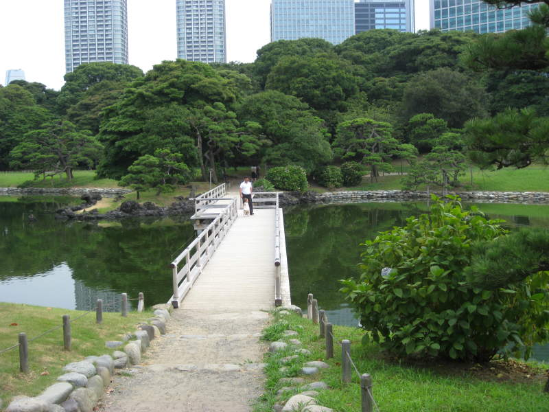
Japanese
bridges always seem to have been poorly planned. I guess they
figure the squared bends in the middle would make us think they meant
it to be that way.
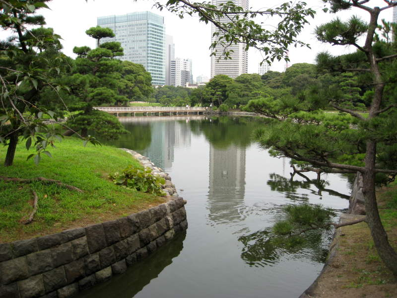
The Japanese have a wonderful reverence for the beauty of water.
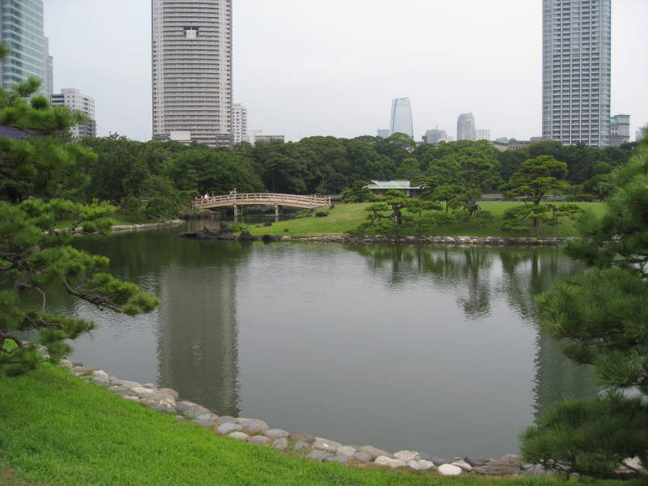
A
footbridge in the distance. If you recognize it from the Tokyo
Tower pictures, that peculiarly shaped building isvisible behind the trees.
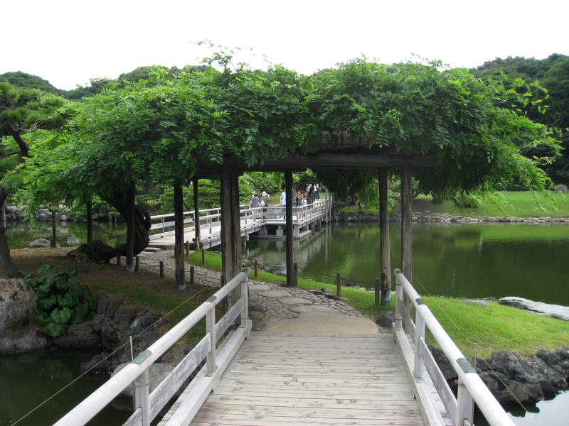
It
would be nice if I could walk over a bridge like this on the way back
from work. Nope, you have to go to Japan for that, apparently.
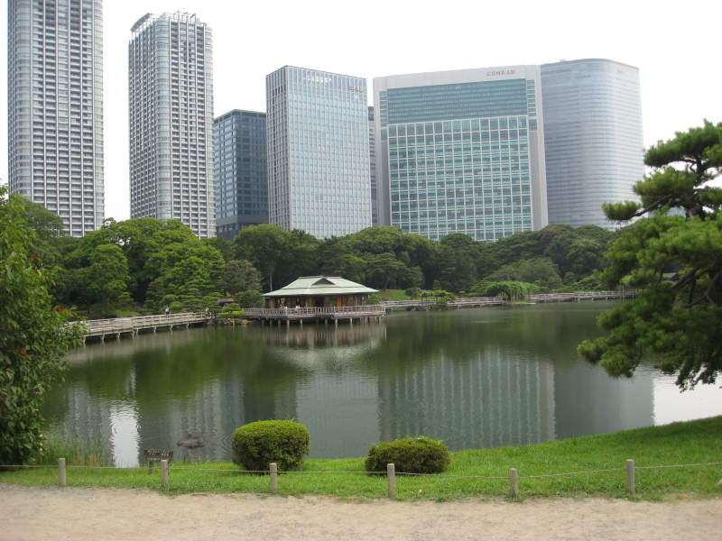
You can see a tea house in the distance. Those buildings in the background would look tiny if not for this tea house.
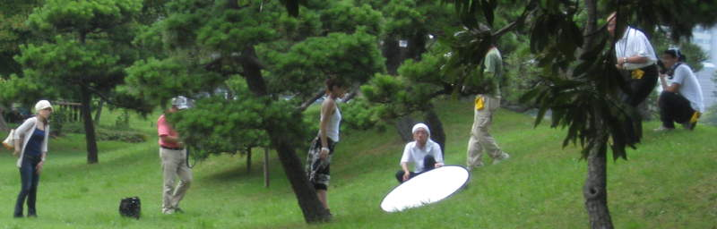
Here
was something amusing I came across a couple times in Japan.
Every so often, when you're around some arresting scenery, you'll
see photographers and a model. However, the minute they see
you're pulling out your own camera, they will pack up their whole
operation within seconds and run away. That guy holding the
mirror? He just spotted me. Two seconds after this picture
was taken, they were back in the van.
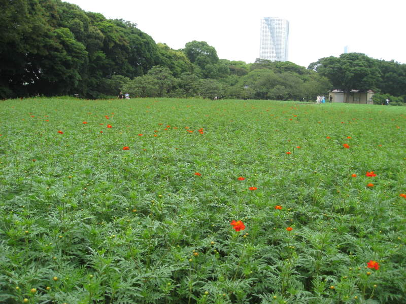
Here's a field of tiny orange flowers. I like the fact that it seems natural, like how dandelions sprout up randomly.
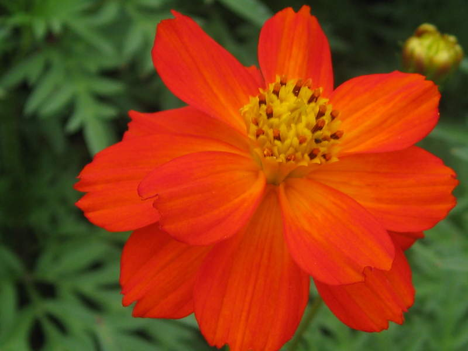
This
is me testing out my camera's digital macro zoom on one of these
unsuspecting flowers. I recommend you checking out digital macro
in your own camera. In addition to high-res pictures of tiny
flowers, you can take detailed pictures of bugs, and even can see the
fibers in a sheet of paper.
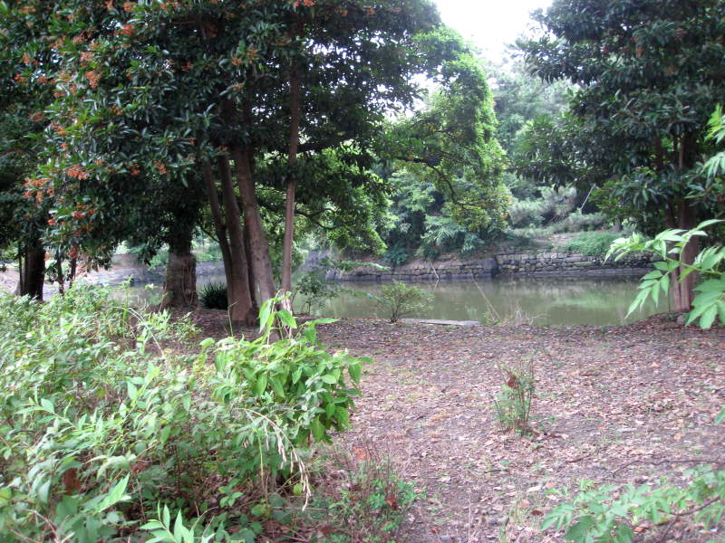
More water, and a tree adorned with more flowers.
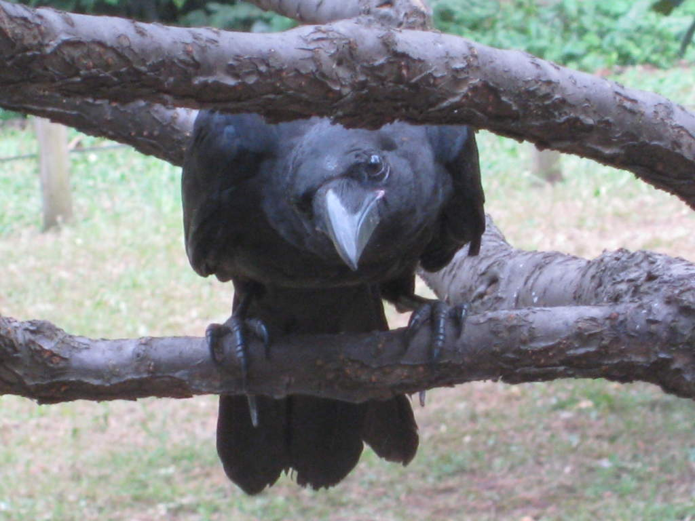
A curious bird eyes my camera. These crows are all over Japan, but their squawking sounds eerily human.
Back